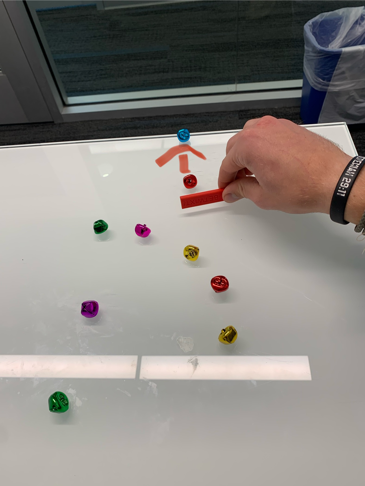
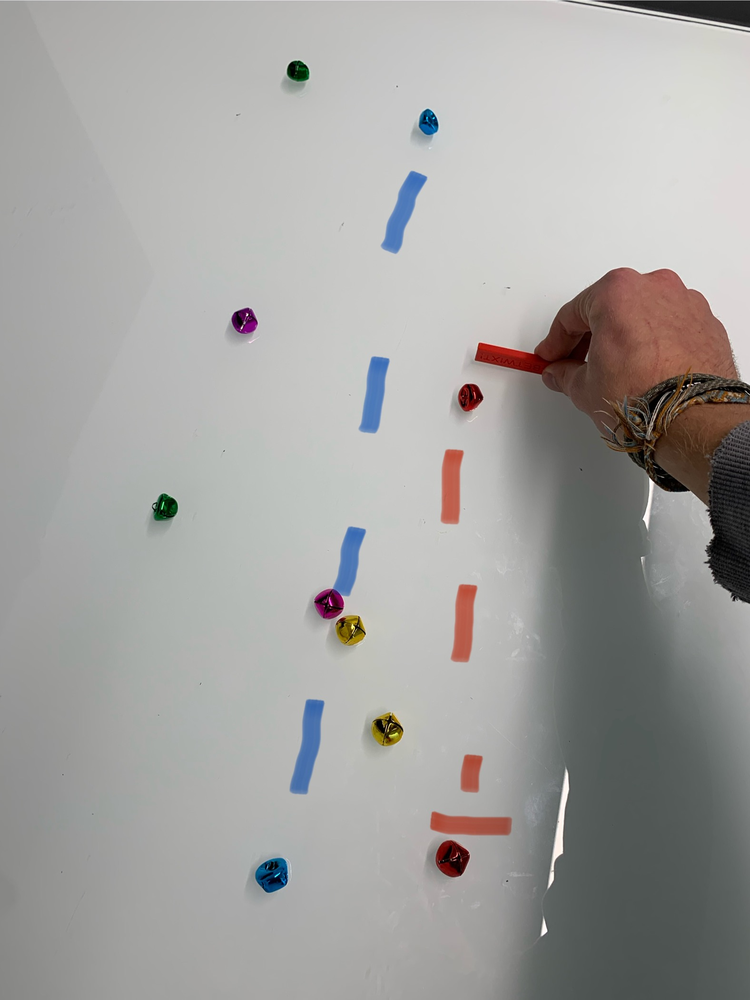

Kick Off

- Because a player is eliminated when their bell rolls off the table, it’s sometimes strategic to try to knock them off.
- If you successfully hit a bell off the table and your bells stays on, that next person in the progression cannot eliminate you because you had an elimination.
- The act of knocking someone off the table counts as a successful turn but can be very risky.
Intentional Miss

- There may be cases where intentionally missing a shot can be beneficial.
- If the person after you in the progression has a hard elimination shot you could hit your bells close together so when the progression comes back around the person that has to go through you has a very hard shot. A safe miss can sometimes be the smarter move.
- Think two steps ahead—if the person playing after you has a very hard shot, you can eliminate them indirectly.
Plane Ride

- All a player has to do to be safe from elination is "break the plane".
- This creates an explotable loophole. If a players bell is already in the plane that they must go between they can lightly tap thier bell and stay in the plane. This counts as a succesful turn